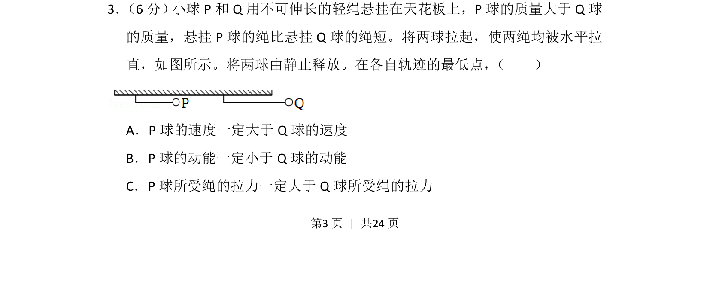
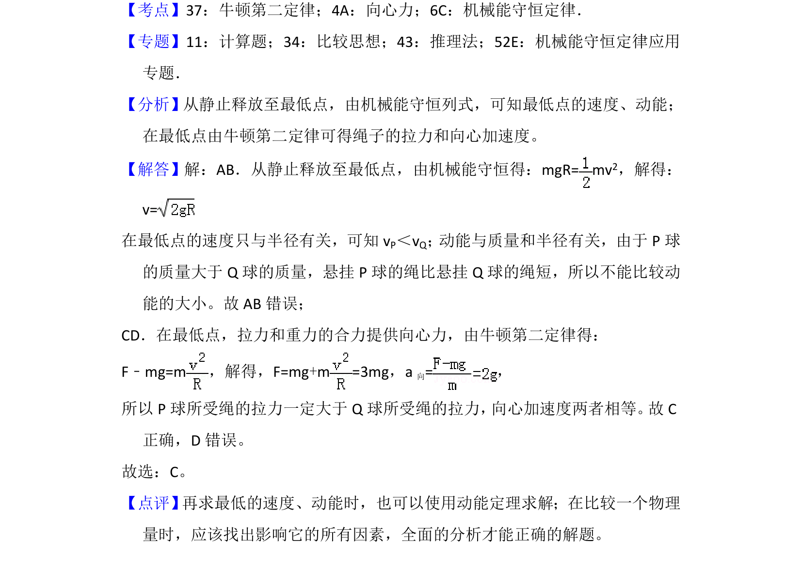

考点：机械能守恒定律 向心力 动能定理

两球从水平释放到最低点，比较速度、动能和拉力大小，涉及机械能守恒与圆周运动。

📄 原 PDF 第 3 页：
素材/真题/吉林/2008-2024·（吉林）物理高考真题/2016年高考物理试卷（新课标Ⅱ）（解析卷）.pdf
3． （6分） 小球P和Q用不可伸长的轻绳悬挂在天花板上，P球的质量大于Q球 的质量，悬挂P球的绳比悬挂Q球的绳短。将两球拉起，使两绳均被水平拉 直，如图所示。将两球由静止释放。在各自轨迹的最低点， （ ） A．P球的速度一定大于Q球的速度 B．P球的动能一定小于Q球的动能 C．P球所受绳的拉力一定大于Q球所受绳的拉力